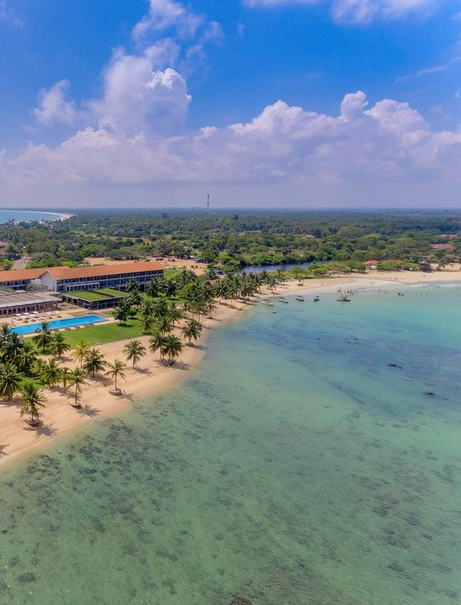

Destinations - Sri Lanka
COLOMBO
The capital city combines modern urban amenities with the country's colorful indigenous and colonial history. As a key stop on the world spice trade routes, Sri Lanka has long held strategic importance for European trading powers.
KANDY
Kandy in Sinhala, pronounced is the English name for the city of Maha Nuvara (Senkadagalapura) in the centre of Sri Lanka. It is the capital of the Central Province and Kandy District.Kandy is one of the most scenic cities in Sri Lanka.
ANURADHAPURA
Anuradhapura is a historical paradise as it houses several heritage monasteries, palaces and monuments. It is known for its vast dagobas or brick stupas, ancient ponds and pools and magnificent temples.

DAMBULLA
Major attractions of the city include the largest and best preserved cave temple complex of Sri Lanka, and the Rangiri Dambulla International Stadium, famous for being built in just 167 days.
Ella
Ella is blessed with some of the most beautiful views, you could find in Sri Lanka. Only 8 km from Bandarawela, this small town is used as a base for plenty of trekking expeditions to the surrounding countryside.
POLONNARUWA
The second most ancient of Sri Lanka's kingdoms, Polonnaruwa was first declared the capital city by King Vijayabahu I, who defeated the Chola invaders in 1070 CE to reunite the country once more under a local leader.
TRINCOMALEE
The quaint city of Trincomalee also famously known as ‘Gokarna’ is an essential fragment of the country.Trincomalee is a port city famous for its white sand beaches and most beautiful harbours.
SIGIRIYA
Sigiriya (Lion's rock) is an ancient rock fortress and castle/palace ruin situated in the central Matale District of Sri Lanka, surrounded by the remains of an extensive network of gardens, reservoirs, and other structures.
YALA
Yala National Park in southeast Sri Lanka is the nation’s largest and most-visited wildlife conservation zone. As Lanka’s oldest wildlife sanctuary, Yala shelters a vast area of unspoilt jungles, grassland and lagoons bordering the Indian Ocean.
HIKKADUWA
Hikkaduwa is a small town on the south coast of Sri Lanka. It is located in the Southern Province, about 20 km north-west of Galle. Hikkaduwa is famous for its beach and corals. Villages affected were Telwatta, Paraliya, Dodanduwa, Kahawa, Rathgama.

HORTON PLAINS
Horton Plains National Park "Maha-Eliya" in Sinhala, is a national park in the highlands of Sri Lanka. It lies at a height of more than 2,000 m in the central highlands, and its altitude means that it has a much cooler and more windy climate than the lowlands of Sri Lanka.
KALPITIYA
Despite its natural beauty, the western peninsular area of KALPITIYA in the Puttalam district of Sri Lanka is remarkably untouched by tourism. But for those lucky enough to visit, there's a plethora of things to see and do! With the small close-knit fishing community dominating the lives of the local people.


KATUNAYAKE
Katunayake a town is situated on the west coast of the island of Sri Lanka near Negombo and close to the commercial capital of Colombo. It is the site of Bandaranaike International Airport, the primary international air gateway to Sri Lanka.

KITHULGALA
Kitulgala is a small town in the west of Sri Lanka. It is in the wet zone rainforest, which gets two monsoons each year, and is one of the wettest places in the country.
KNUCKLES
The Knuckles Mountain Range lies in central Sri Lanka, north-east of the city of Kandy. The range takes its name from a series of recumbent folds and peaks in the west of the massif which resemble the knuckles of clenched fist when viewed from certain locations in the Kandy District.
NEGOMBO
Negombo is a town of about 65,000, approximately 37 km north of Colombo, in Sri Lanka.Negombo has a small port, and its economy is mainly based on tourism and its centuries-old fishing industry, though it also produces cinnamon, ceramics, and brass ware.

NUWARA ELIYA
Nuwara Eliya meaning "city on the plain (table land)" or "city of light", is a town in Sri Lanka.It is considered one of the most important locations for Tea production in Sri Lanka. The town is overlooked by Pidurutalagala, the highest mountain in Sri Lanka.

PASIKUDAH
Pasikudah or Pasikuda is a coastal resort town located about 35 kilometers northwest of Batticaloa, Batticaloa District, Sri Lanka. It used to be a popular tourist destination, Pasikudah and Kalkudah are located few km apart.

RAVANA ELLA
The Ravana Falls are located in the misty mountains of Ella, Sri Lanka along the road. The water gushes down a height of 25 meters fallen from an oval concave rock. Ravana Falls is a 3-tier cascading waterfall, creating rock pools along its way down.

ARUGAM BAY
The Sri Lankan coastal town of Arugam Bay lies on the Indian Ocean.Arugam Bay is often called a surfer’s paradise. The famous surfing points here are Main Point and Whiskey Point, with surfboard rentals in their proximity.
SINHARAJA
Sinharaja Forest Reserve is one of the very few virgin rainforests in the world, which is why it is one of the UNESCO World Heritage!The unique relation of flora and fauna in this forest makes it one of the hotspots in the world.

DEHIWALA ZOO
Zoo is also believed that the open zoo concept was introduced by this particular zoo which was further taken ahead by various others. Basically known as the Dehiwala Zoo, the real name of the zoo is the National Zoological Gardens of Sri Lanka.
UNAWATUNA
When in Sri Lanka be sure to pay a visit to Unawatuna which is in the southern part of Sri Lanka, 6 km from Galle. Known for its beautiful beaches, hip cafes, trendy restaurants and plenty of sightseeing make Unawatuna an attraction for tourists as well as the locals who are looking for a weekend getaway.
NILAVELI
Nilaveli seaside town is 16 km from Trincomalee District in Eastern Sri Lanka. The town boasts of beautiful waters that are ideal for water sports, snorkelling and scuba diving.
UDAWALAWA
Udawalawe National Park gets its name from Udawalawe reservoir that was built on Walawe river. Animals that were displaced due to the development were shifted to the national park.